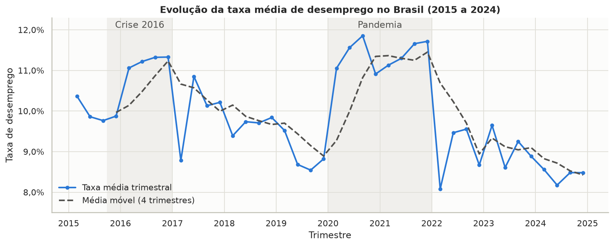
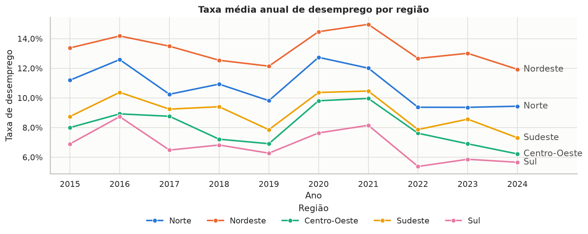
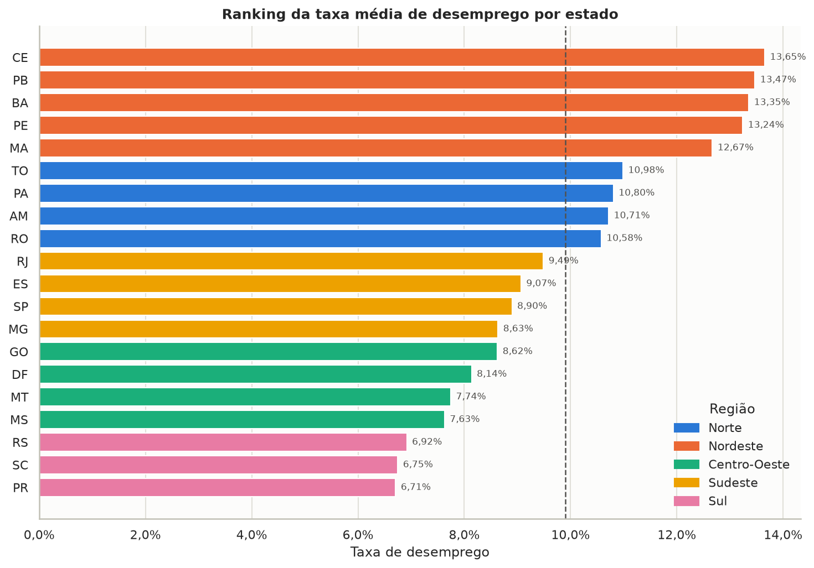
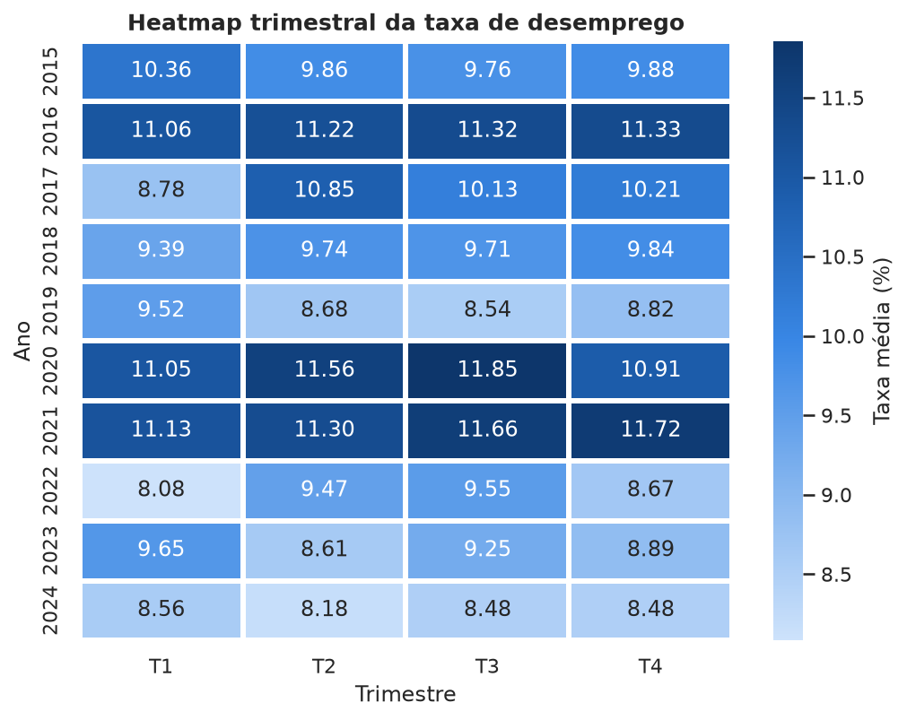
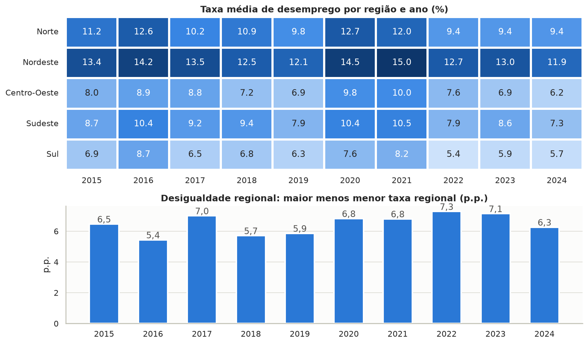
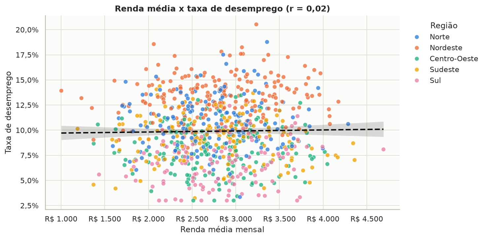
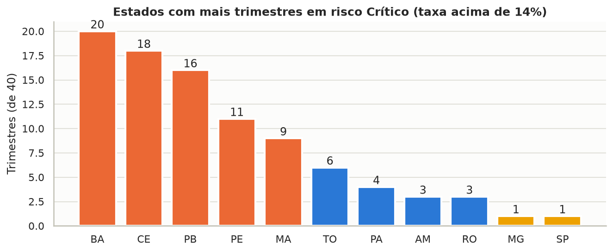
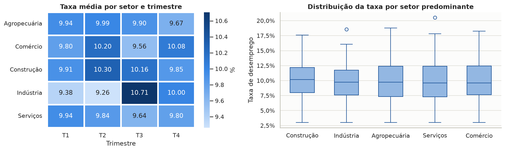
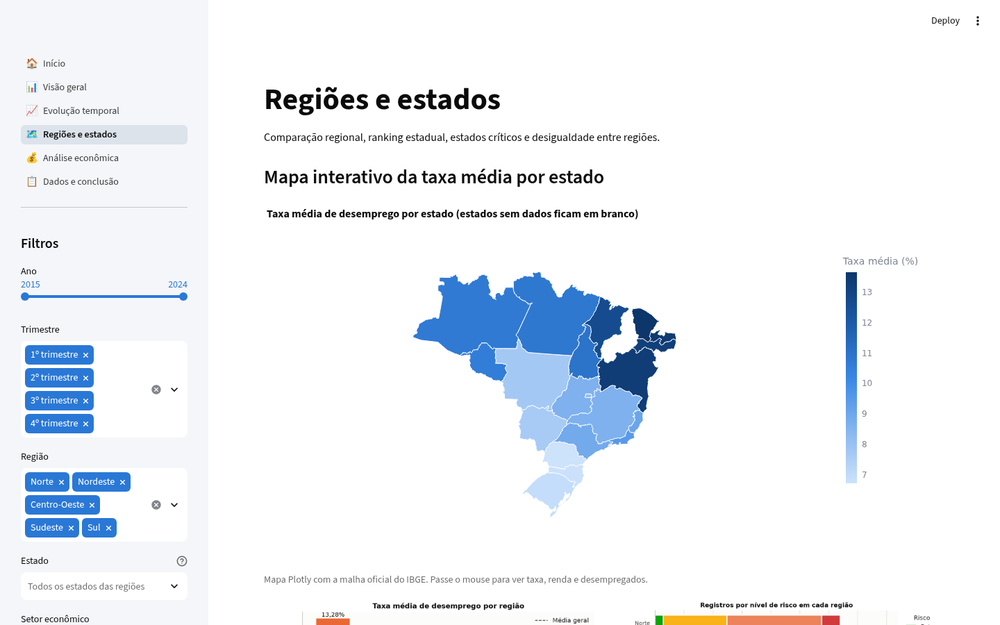

01Sobre o projeto
O desemprego é um dos principais indicadores socioeconômicos de um país: afeta a qualidade de vida, a renda das famílias, o consumo, o desenvolvimento regional e o crescimento econômico.
Este projeto analisa uma base simulada com 800 registros (20 estados x 40 trimestres) para identificar tendências, regiões mais afetadas, estados críticos, períodos de crise e de recuperação econômica.
O fluxo completo vai da leitura do CSV bruto até a publicação online: limpeza e engenharia de atributos no notebook, persistência em um banco SQLite com modelo relacional em SQLAlchemy, dashboard multipágina em Streamlit e esta página no GitHub Pages.
02Perguntas orientadoras
- Quais regiões apresentam maior desemprego?
- Quais estados apresentam menores taxas?
- Existem períodos de crise econômica mais evidentes?
- O desemprego aumentou ou diminuiu ao longo do tempo?
- Existem diferenças relevantes entre regiões?
- Há sazonalidade em determinados setores?
- Quais grupos parecem mais vulneráveis?
03Métricas analisadas
04Tecnologias
| Funcionalidade avançada | Como foi feita |
|---|---|
| Persistência em banco | SQLite gerado pelo notebook com o ORM do SQLAlchemy |
| Modelagem relacional | Tabelas regiao, uf, setor e indicador_trimestral com chaves estrangeiras; o app lê com JOIN |
| Dashboard multipágina | Seis páginas com st.navigation e filtros compartilhados |
| Mapa interativo | Mapa coroplético Plotly com a malha oficial do IBGE |
| Séries temporais e correlação | Média móvel, variação anual, tendência linear e correlação de Pearson |
05Principais gráficos








06Arquivos do projeto
- README: documentação, estrutura e como executar.
- Notebook de análise
notebooks/analise_desemprego.ipynb: leitura, limpeza, atributos, KPIs, gráficos e interpretação. - Código do dashboard
app.py,utils.pyepages/. - Base original (CSV) e base tratada (CSV).
- Banco SQLite
database/desemprego.sqlite.
07Dashboard interativo
O dashboard no Streamlit Community Cloud tem seis páginas (início, visão geral, evolução temporal, regiões e estados, análise econômica, dados e conclusão) e filtros por ano, trimestre, região, estado, setor econômico e nível de risco.
Os KPIs, gráficos e textos de interpretação são recalculados a cada filtro. Há mapa interativo, tabela dinâmica configurável e download dos dados filtrados.
Acessar o dashboard
08Principais conclusões
A taxa caiu de 10,36% para 8,48%. Os picos de 2016 (recessão) e de 2020 e 2021 (pandemia) foram seguidos de recuperação, e 2024 teve a menor média anual da série.
O Nordeste tem taxa cerca de duas vezes maior que a do Sul, e a ordem entre as regiões é a mesma nos dez anos analisados.
Bahia, Ceará e Paraíba lideram em trimestres de risco Crítico; Paraná, Santa Catarina e Rio Grande do Sul têm as menores taxas.
Renda, inflação, vagas formais e setor têm correlação próxima de zero com o desemprego nesta base. A recomendação é focar políticas de emprego no Nordeste e no Norte.
09Propósito pedagógico
Projeto desenvolvido para a Avaliação G1 da disciplina Linguagem de Programação: Análise e Visualização de Dados com Python. O objetivo é praticar um ciclo completo de análise de dados (tratamento, exploração, KPIs, visualização, banco de dados, dashboard e publicação) com foco em interpretar o cenário econômico e apoiar a tomada de decisão, mais do que apenas gerar gráficos. A base é simulada e foi disponibilizada no repositório Dados-Simulados-G2.